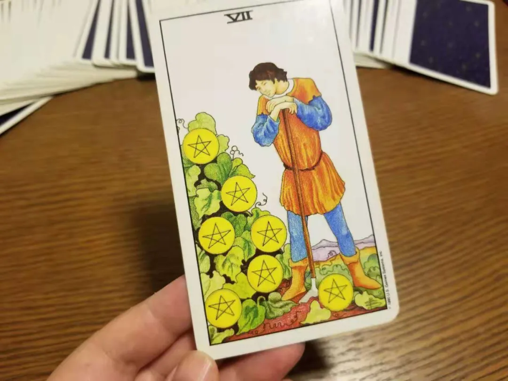
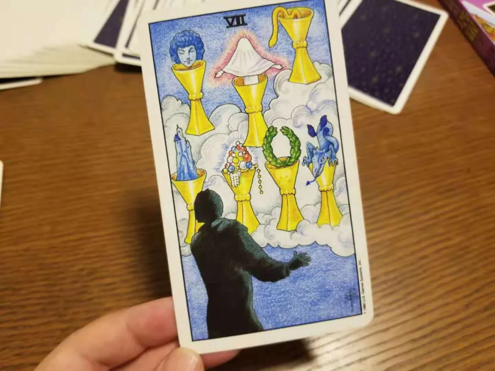
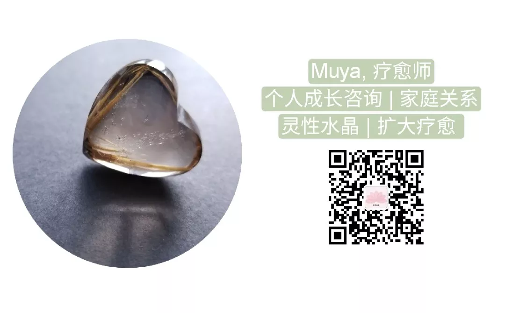

塔罗 | 关于一桩失窃的悬案
Muya 南园晶舍[南园晶舍](http://weixin.qq.com/r/Cz8XEwzEgMT8KUhwb2qP)
| 微信号 | gh_512c07fa4640 |
| 功能介绍 | 为大地母亲祈祷 |
2021-07-01
原文链接(长) 原文链接(短)
我想记录下这次塔罗解读，整个过程都太令人唏嘘，感谢塔罗再一次用极为直白的方式向我揭露事物存在的真相。可能无关于灵性，而是极为贴近生活的问题。
我的好友M最近陷入烦恼，在她家里丢了东西，其中有比较值钱的珠宝首饰。有可能是她疏忽弄丢了，有可能是放在其他地方，有可能是被偷走了，其中她较为疑心的是一个工作人员——M有非常信任他人的习惯，自觉家里并没有贵重物，所以工作人员上门，她都会直接出门，让对方完成后自行离去。但她也没有任何证据去质问对方，只能自己懊恼。为了厘清事情的真相，我试着为她抽了几张牌。
代表其他可能性的牌看起来都非常正向，没有任何值得怀疑之处，只有代表工作人员的牌是逆位星币八——诚实、辛勤的劳作被倒置，不言而喻。我感到如此下判断有些草率，于是请求一个更加明确的指引，如果对方真的偷窃且转手获得金钱利益的话，请告诉我。塔罗非常赤裸地给了我一张正位星币七。

我把牌面给M看，她感叹只能破财消灾，同时又想确认一下是哪位工作人员干的（前后有两位）。我抽了两张牌来分别代表他们，前一位是代表工作结束正常离开的宝剑六（可能心情不太好），后一位，塔罗更加赤裸地给出了圣杯八——人在面对形形色色财物（还有珠宝）诱惑时，迷惑了心智。看到这张牌，我们顿时异口同声：这也太直接了吧！

有意思的是，M说起几年前也在家里丢失过一件首饰，至今不知道是谁拿走了，想问问看。我抽牌，很空洞，没有一张能看出是在回答，连续洗牌几次都是如此。我说：上天不想让你再追问这件事了，随风而去吧。她说好的，就当下放下。
感慨，世事不可隐藏，发生过的事，总有一面镜子可以映出真相，对于幽暗无人处，我们应当更加谨慎而洁身自好。但同时，天意不会“有问必答，无所不至”，总有一些意识的禁区是你无法进入的。

工作室七月活动讯息
塔罗基础学习工作坊——零基础初学者适用
时地：7月17/18日 北京东城区
费用：1800/人